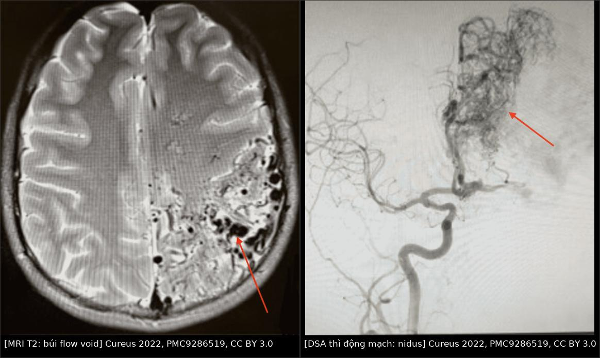
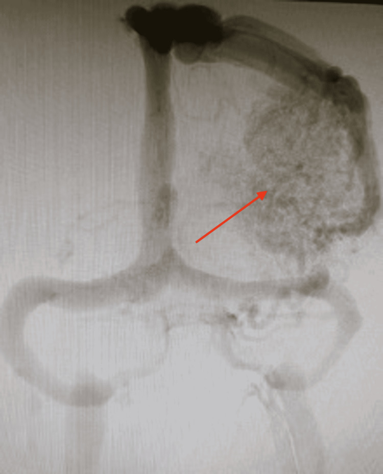
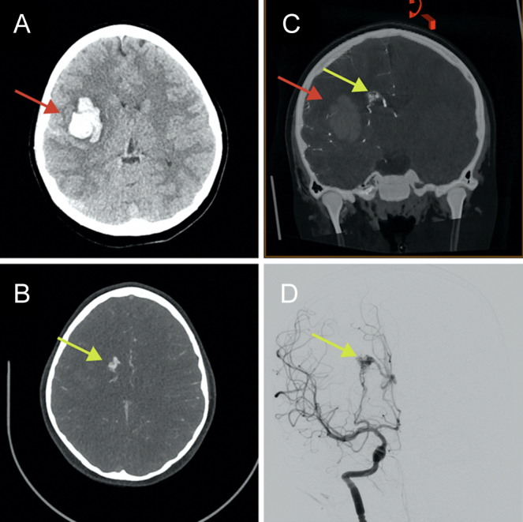

1787 — AVM não ở trẻ đã vỡ: phân tầng cấp cứu từ CT/CTA đến DSA / Ruptured pediatric brain arteriovenous malformation
Tags: pattern:xuat-huyet-nao pattern:flow-void pattern:nidus pattern:di-lech-duong-giua pattern:nao-ung-thuy vung:nao vung:mach-nao score:Spetzler-Martin score:SM-Supp score:GCS protocol:CT-khong-can-quang protocol:CTA protocol:DSA protocol:MRI-DWI protocol:DTI
Mức chắc chắn (certainty): tổng hợp y văn (literature synthesis) — đồng thuận quốc tế IPSO 2025 về xuất huyết não ở trẻ (J Am Heart Assoc, PMC12909056); tổng quan hệ thống 20 đoàn hệ hồi cứu về quản lý AVM nhi (Neurosurg Rev 2026, PMC13216134); loạt 30 trẻ mổ AVM (Medicina 2026, PMC13609203); loạt 89 trẻ/101 AVM xạ phẫu đơn phân liều (Childs Nerv Syst 2026, PMC12982297); ca nguyên văn có CT/CTA/DSA/DTI (J Neurosurg Case Lessons 2024, PMC11337941). Bằng chứng chủ yếu hồi cứu, không có thử nghiệm ngẫu nhiên.
Câu chốt: Ở trẻ, AVM là nguyên nhân hàng đầu của xuất huyết não tự phát, và một nửa số xuất huyết não ở trẻ là do AVM. Ca đến cấp cứu không phải để "điều trị AVM" ngay mà để trả lời 4 câu theo thứ tự: (1) có xuất huyết và có thoát vị không? (2) có AVM hay nguyên nhân khác — CTA/MRA rồi DSA? (3) có cần mổ lấy máu tụ/giải ép NGAY không? (4) nếu không cấp cứu, AVM thuộc tầng nào — mổ, xạ phẫu, nút mạch hay theo dõi? Sai lầm chết người: cắt AVM ngay trong máu tụ cấp ở mọi ca, hoặc loại trừ AVM chỉ vì CTA âm khi nidus bị máu tụ chèn ép.
1. Tổng quan bệnh học – cơ chế hình ảnh
1.1 Bệnh học: nidus bẩm sinh + đột biến soma
- AVM não là nidus gồm mạch loạn sản nối động mạch → tĩnh mạch không qua giường mao mạch, có động mạch nuôi giãn và tĩnh mạch dẫn lưu sớm. Đây là tổn thương bẩm sinh, thường trở nên triệu chứng ở tuổi trẻ.
- Nhiều AVM não có đột biến soma KRAS trong nội mô nidus (PMC12909056) — giải thích vì sao tổn thương khu trú dù đột biến liên quan đường RAS–MAPK. Điều này mở ra hướng ức chế MEK nhưng chưa có dữ liệu hiệu quả ở người (PMC12909056).
- Vì sao trẻ dễ xuất huyết hơn người lớn cùng tổn thương: tuổi thọ còn dài → nguy cơ tích lũy theo thời gian; AVM ở trẻ thường nhỏ, sâu, dẫn lưu tĩnh mạch sâu — đúng nhóm dễ vỡ (PMC13216134).
- Vì sao vỡ: thành mạch nidus mỏng, áp lực động mạch truyền trực tiếp vào tĩnh mạch không giảm qua mao mạch; túi phình trong nidus/túi phình liên quan dòng chảy làm điểm yếu thêm.
1.2 Dịch tễ và tiên lượng
- Tần suất 0,014–0,028% dân số; AVM chiếm ~50% xuất huyết não ở trẻ (PMC13216134).
- Nguy cơ xuất huyết hàng năm thay đổi rất rộng 0,9–7,14% giữa các đoàn hệ; AVM chưa vỡ ước tính 2–4%/năm (PMC13609203).
- Khi đã vỡ: di chứng thần kinh vĩnh viễn 20–41%, tử vong ~25% (PMC13216134).
- Trong giai đoạn cấp: nguy cơ tái xuất huyết tới 32% tùy nguyên nhân; máu tụ lan rộng ~1/3 bệnh nhân trong 48–72 giờ (PMC12909056).
1.3 TẠI SAO hình ảnh trông như vậy (vật lý + mô bệnh)
- CT không cản quang: máu tụ cấp 60–80 HU, bờ rõ, có hiệu ứng khối/đẩy đường giữa; máu trong não thất tăng đậm độ trong não thất. AVM có thể có vôi hóa (không bắt buộc) — vôi hóa không loại trừ AVM.
- CTA: nidus ngấm thuốc mạnh, động mạch nuôi giãn, tĩnh mạch dẫn lưu hiện sớm ở thì động mạch; nhưng máu tụ có thể che nidus → CTA âm không loại trừ.
- MRI: flow void ("búi giun"/bag of worms) trên T2 do spin chạy nhanh rời mặt cắt; SWI/T2* thấy máu cũ/hemosiderin; DWI/ADC phân biệt nhồi máu cấp (ADC giảm) với phù quanh máu tụ (ADC tăng); MRA thấy cuống và dẫn lưu.
- DSA: chuẩn vàng — xác định nidus, số cuống, tĩnh mạch dẫn lưu, túi phình liên quan, tuần hoàn bàng hệ; cần 3D xoay trước can thiệp.
- DTI: dùng để lập kế hoạch mổ quanh đường thần kinh, nhưng trong máu tụ cấp, DTI bị lệch do máu tụ đẩy giải phẫu + artifact từ tính → có thể đọc sai là đứt đường thần kinh; phải chụp lại sau khi máu tụ tiêu bớt (PMC11337941).
1.4 Bảng số liệu trụ cột
| Đại lượng | Con số | Nguồn |
|---|---|---|
| Tần suất AVM não | 0,014–0,028%; ~50% xuất huyết não ở trẻ | PMC13216134 |
| Nguy cơ xuất huyết/năm | 0,9–7,14% (đoàn hệ); chưa vỡ 2–4%/năm | PMC13216134, PMC13609203 |
| Khi đã vỡ | di chứng 20–41%, tử vong ~25% | PMC13216134 |
| Tái xuất huyết cấp | tới 32%; máu tụ lan rộng ~1/3 trong 48–72 giờ | PMC12909056 |
| Phân bố Spetzler–Martin | I–II 44,1% (740), III 38,4% (645), IV–V 17,5% (293) | PMC13216134 |
| Mổ lấy AVM | tắc hoàn toàn 81–100% (trung bình ~93%) | PMC13216134 |
| Nút mạch đơn thuần | tắc hoàn toàn 65–67% ở ca chọn lọc | PMC13216134 |
| Xạ phẫu đơn thuần | 51–68,5%; 43,3% nếu trước đó đã nút mạch | PMC13216134 |
| Tái phát sau "khỏi" | 0,9–29,4%; loạt lớn 10,4–16,7%; muộn 14–26 năm | PMC13216134 |
| Loạt mổ 30 trẻ | vỡ 63,3%, ICH 60%, IVH 33,3%, tử vong 13,3%, mRS 0–2 76,7% | PMC13609203 |
| IVH → kết cục xấu | OR 28,5; GCS nhập viện 8 vs 15 | PMC13609203 |
| Xạ phẫu 89 trẻ/101 AVM | vỡ 70,8%; liều trung vị 20 Gy; tắc 83% ở 5 năm; RN có triệu chứng 8,5% | PMC12982297 |
2. Mẫu hình + chẩn đoán phân biệt theo vị trí (gamut)
2.1 Mẫu hình lâm sàng – hình ảnh
- Xuất huyết nhu mô thùy + đau đầu đột ngột + thiếu hụt khu trú: ổ tăng đậm độ trên CT, quanh ổ có flow void/mạch giãn; CTA có nidus. Đây là thể hay gặp nhất ở trẻ lớn.
- Xuất huyết não thất (IVH) ± giãn não thất: AVM sâu/đồi thị hoặc AVM vỡ vào não thất; tiên lượng xấu nhất (IVH OR 28,5 cho mRS 3–6) (PMC13609203).
- SAH + máu bể nền: AVM vỡ vào khoang dưới nhện, hoặc túi phình liên quan dòng chảy; cần DSA phân biệt.
- Co giật đơn thuần hoặc đau đầu mạn: AVM chưa vỡ; hình ảnh flow void/calcification, không có máu tụ.
- Hố sau (tiểu não/thân não): đau đầu, nôn, thất điều; nguy cơ thoát vị hạnh nhân nhanh, cần xử trí cấp cứu sớm.
2.2 Gamut theo vị trí và tuổi
- Thùy não (trán/đỉnh/thái dương/chẩm): AVM, cavernoma, u trong não chảy máu, CVST có nhồi máu xuất huyết.
- Nhân xám sâu (đồi thị, nhân bèo): AVM thể sâu, VGAD/VGAM (xem bài 1786), tăng huyết áp (hiếm ở trẻ), bệnh mạch nhỏ.
- Hố sau: AVM tiểu não/thân não, cavernoma, u (medulloblastoma ependymoma), dị dạng mạch.
- IVH đơn thuần: AVM sâu, CVST, rối loạn đông máu, chấn thương, u nhú đám rối.
- Mnemonic "AVM" cho xuất huyết ở trẻ: Abnormal vessels (flow void/nidus) · Young (trẻ, không tăng huyết áp) · Medial/deep or lobar (vị trí sâu/thùy, không điển hình cho tăng huyết áp).
3. Bảng so sánh phân biệt (ma trận đối chiếu)
| Thực thể (entity) | Hình ảnh điển hình | Chốt vào (rule-in) | Chốt loại (rule-out) | Gợi ý xác nhận |
|---|---|---|---|---|
| AVM vỡ | Ổ máu tụ thùy/sâu + flow void, nidus ngấm thuốc, tĩnh mạch dẫn lưu sớm; có thể vôi hóa | Nidus + cuống động mạch + dẫn lưu sớm trên CTA/DSA | Không thấy nidus nhưng có máu tụ lớn chèn ép → vẫn phải DSA lại | DSA 3D; MRI T2/TOF; SM/SM-Supp |
| Cavernoma vỡ | "Bỏng ngô" đa tín hiệu, viền hemosiderin tối trên SWI/T2*, không flow void lớn, không shunt sớm | Viền hemosiderin + không có cuống động mạch | Có nidus ngấm thuốc + tĩnh mạch dẫn lưu sớm → AVM | MRI SWI; DSA thường âm |
| Phình động mạch vỡ | Máu bể nền/SAH, túi phình ở chỗ chia mạch; có thể kèm máu nhu mô | Túi phình + SAH bể nền | Nidus + nhiều cuống + dẫn lưu sớm → AVM | CTA/DSA; không có nidus |
| CVST có nhồi máu xuất huyết | Giảm đậm độ không theo lãnh thổ + xuất huyết trong ổ; xoang tăng đậm độ/khuyết thuốc | Khuyết thuốc xoang + nhồi máu không theo lãnh thổ | Có nidus/flow void + tĩnh mạch dẫn lưu sớm → AVM | CTV/MRV; DSA thì tĩnh mạch |
| U trong não chảy máu | Khối ngấm thuốc không đều, phù quanh, có thể vôi hóa; máu tụ trong u | Thành phần mô u + ngấm thuốc kiểu u | Chỉ có mạch giãn/flow void, không có mô u → AVM | MRI + cản quang; DSA |
| Rối loạn đông máu | Máu tụ nhiều ổ/thùy, không có mạch bất thường | PT/aPTT/tiểu cầu bất thường + không nidus | Có nidus trên CTA/DSA → AVM | Xét nghiệm đông máu; CTA |

Trái: MRI T2 — búi flow void ("bag of worms") vùng trán–đỉnh trái, kích thước 8,5 × 8,5 × 7,5 cm, Spetzler–Martin V. Phải: DSA thì động mạch — nidus dày đặc, cuống nuôi từ tuần hoàn cảnh trong. Ảnh ghép letterbox từ Cureus 2022 (PMC9286519), CC BY 3.0.3.1 Ba dấu hiệu định vị trên CT/CTA cấp cứu
- Dấu 1 — ổ máu tụ "quá tròn" hoặc bờ không đều: gợi ý tổn thương mạch máu bên dưới; đo thể tích/thể tích ước tính và độ lệch đường giữa.
- Dấu 2 — mạch giãn trong/quantổ máu: trên CTA, tìm động mạch nuôi giãn và tĩnh mạch dẫn lưu hiện sớm; nếu không thấy, vẫn không loại trừ.
- Dấu 3 — IVH/giãn não thất: máu trong não thất + giãn não thất là dấu tiên lượng xấu và là chỉ định dẫn lưu não thất khi có giảm tri giác/giãn tiến triển (PMC12909056).
3.2 Đọc DSA hai thì: nidus và đường thoát

DSA thì tĩnh mạch cùng ca AVM 8,5 × 8,5 × 7,5 cm: thấy rõ tĩnh mạch dẫn lưu và mức độ giãn của hệ tĩnh mạch — yếu tố quyết định phân độ (dẫn lưu sâu +1) và đường vào can thiệp. Nguồn: Cureus 2022 (PMC9286519), Fig. 3, CC BY 3.0.- Thì động mạch: trả lời nidus ở đâu, bao nhiêu cuống, có túi phình liên quan dòng chảy không.
- Thì tĩnh mạch: trả lời dẫn lưu nông hay sâu, có hẹp đường ra/tĩnh mạch dẫn lưu không — hẹp đường ra làm tăng nguy cơ xuất huyết và thay đổi chiến lược.
- 3D xoay trước can thiệp để chọn catheter và tránh bỏ sót cuống nhỏ.
4. Protocol chụp + hệ phân độ/điểm chuẩn hóa
4.1 Thứ tự chẩn đoán trong cấp cứu (theo IPSO 2025)
- CT không cản quang ngay khi nghi xuất huyết (Statement 5) — nhanh, không cần gây mê sâu, xác định máu tụ/IVH/thoát vị.
- CTA (hoặc MRA nếu chọn MRI) cùng lúc để tìm nguyên nhân mạch máu (Statement 6) — không chờ kết quả CT rồi mới nghĩ tới mạch.
- DSA cho mọi trẻ không rõ nguyên nhân trên CTA/MRA, hoặc để mô tả đầy đủ AVM trước điều trị (Statement 7); DSA nên do người có kinh nghiệm thực hiện.
- MRI/MRA bổ sung khi CTA không kết luận, cần đánh giá nhu mô (DWI/ADC, SWI), hoặc lập kế hoạch mổ/xạ phẫu.
- Chụp lại khi nghi ngờ: máu tụ lớn có thể che nidus; CTA/DSA âm trong giai đoạn cấp không phải bằng chứng loại trừ.
4.2 Xử trí cấp cứu — khi nào mổ, khi nào chờ
- Thoát vị/tăng áp nội sọ nặng: mổ lấy máu tụ + giải ép (hemicraniectomy) theo Statement 19; dẫn lưu não thất ngoài (EVD) khi IVH/giãn não thất gây giảm tri giác (Statement 18).
- Cắt AVM cấp: thường KHÔNG thực hiện ngay trong máu tụ cấp, trừ khi có đặc điểm nguy cơ tái vỡ sớm cao (Statement 20). Lý do: mô não đang phù, giải phẫu bị máu tụ làm lệch, nguy cơ mất máu và tổn thương thêm.
- Trì hoãn có kế hoạch: sau khi ổn định, chụp lại DSA/MRI (khi máu tụ tiêu bớt) để đánh giá nidus thật; ca minh họa trong PMC11337941 được mổ/xạ phẫu sau 6 tuần, khi DTI cho thấy nidus nằm trong bó vỏ–tủy.
- Kiểm soát: huyết áp, đau, co giật, đường huyết, nhiệt độ; không dùng kháng đông nếu không có chỉ định đặc biệt; xét nghiệm đông máu và hiệu chỉnh yếu tố thiếu.
4.3 Phân độ Spetzler–Martin và bản bổ sung
- Spetzler–Martin (SM 1–5): kích thước < 3 cm = 1**, **3–6 cm = 2**, **> 6 cm = 3; vùng chức năng (eloquent) +1; dẫn lưu tĩnh mạch sâu +1.
- SM bổ sung (supplemented SM, Lawton–Young): **tuổi < 20 = 1** (20–40 = 2; > 40 = 3); chưa vỡ = 1; nidus lan tỏa (diffuse) = 1 → SM-Supp 2–10; grade 6 là ngưỡng nguy cơ phẫu thuật được xem là chấp nhận (PMC6331307).
- Ở trẻ đã vỡ: tuổi luôn 1 điểm, chưa vỡ 0 điểm, nidus lan tỏa 0/1 → SM-Supp thường 2–8; loạt 30 trẻ mổ có SM-Supp 2–8, trung vị 3,5; mỗi 1 điểm tăng → OR 2,55 cho kết cục xấu (PMC13609203).
- Ghi vào báo cáo: SM, SM-Supp, kích thước nidus (mm), vị trí eloquent, kiểu dẫn lưu, có túi phình trong nidus/túi phình liên quan dòng chảy không, có IVH không.
4.4 Sơ đồ phân tầng
flowchart TD
A[Trẻ đau đầu đột ngột, co giật hoặc liệt khu trú] --> B[CT không cản quang ngay]
B --> C{Có xuất huyết?}
C -->|Không| D[Tìm nguyên nhân khác: MRI, MRV, xét nghiệm]
C -->|Có| E[CTA hoặc MRA cùng lúc]
E --> F{Thấy nidus hoặc mạch bất thường?}
F -->|Có| G[DSA xác nhận + đo SM/SM-Supp]
F -->|Không| H[DSA vì máu tụ có thể che nidus]
G --> I{Thoát vị hoặc tăng áp nội sọ?}
I -->|Có| J[Mổ lấy máu tụ + giải ép; EVD nếu IVH]
I -->|Không| K{SM-Supp và vị trí}
K -->|Thấp, mổ được| L[Mổ có kế hoạch sau ổn định]
K -->|Sâu hoặc eloquent, thể tích nhỏ| M[Xạ phẫu đơn phân liều]
K -->|Nidus lớn hoặc nhiều cuống| N[Nút mạch bổ trợ ± mổ/xạ phẫu]
K -->|Nguy cơ cao, không can thiệp được| O[Theo dõi + tư vấn]
J --> P[Chụp lại sau máu tụ tiêu; quyết định AVM]
- Xạ phẫu: liều biên 18–20 Gy (trung vị 20 Gy, khoảng 14–26 Gy) cho AVM nhỏ; tắc 55% ở 3 năm, 73,1% ở 4 năm, 83% ở 5 năm; không có xuất huyết sau xạ phẫu trong loạt 89 trẻ, RN có triệu chứng 8,5%, V12Gy = 10 cm³ là mốc nguy cơ thấp (PMC12982297).
- Thời gian tiềm tàng 1–3 năm: trong lúc chờ tắc, AVM vẫn có thể chảy máu; phải tư vấn và theo dõi.
- Nút mạch: chủ yếu bổ trợ trước mổ/xạ phẫu hoặc làm giảm lưu lượng; nút mạch đơn thuần để khỏi chỉ đạt 65–67% ở ca chọn lọc và có thể làm giảm tỉ lệ tắc của xạ phẫu sau đó (43,3% vs 68,5%) (PMC13216134).
- Theo dõi sau "khỏi": tái phát 10,4–16,7% ở loạt lớn, có ca 14–26 năm sau điều trị → theo dõi dài hạn tới tuổi trưởng thành, không dừng sau một DSA âm (PMC13216134).
5. Biến thể bình thường và cạm bẫy
- Cạm bẫy #1 — CTA/DSA âm trong máu tụ cấp. Máu tụ chèn ép nidus và làm giảm dòng qua shunt; CTA âm không loại trừ. Phải MRI/MRA và DSA lặp sau khi máu tụ tiêu bớt (PMC12909056, PMC11337941).
- Cạm bẫy #2 — dùng DTI cấp để quyết định cắt hay không. Trong máu tụ cấp, DTI bị lệch do đẩy giải phẫu và artifact từ tính; ca PMC11337941 ban đầu tưởng bó vỏ–tủy đã mất, chụp lại sau 6 tuần thấy bó còn và nidus nằm trong bó → đổi từ mổ sang xạ phẫu. Không mổ dựa trên DTI cấp đơn thuần.
- Cạm bẫy #3 — chỉ nhìn máu tụ, bỏ qua IVH/giãn não thất. IVH là yếu tố tiên lượng xấu mạnh nhất trong loạt mổ (OR 28,5); giãn não thất tiến triển cần EVD, không chờ.
- Cạm bẫy #4 — gọi cavernoma là AVM. Cavernoma không có cuống động mạch/tĩnh mạch dẫn lưu sớm, DSA thường âm; mổ cavernoma có thể thực hiện sớm trong vài tuần (khác AVM) (PMC12909056).
- Cạm bẫy #5 — bỏ qua túi phình liên quan dòng chảy. AVM có thể kèm túi phình trong nidus hoặc trên cuống; đây là điểm vỡ và phải được mô tả trên DSA 3D trước khi quyết định.
- Cạm bẫy #6 — "DSA âm sau mổ = khỏi vĩnh viễn". Ở trẻ, tái phát sau tắc hoàn toàn đã được ghi nhận, có thể nhiều năm sau; cần theo dõi dài hạn (PMC13216134).
- Biến thể bình thường: mạch giãn lớn quanh ổ máu tụ do tăng tưới máu phản ứng, không có shunt sớm; vôi hóa mạch ở người lớn không đồng nghĩa AVM. Đừng đo "nidus" chỉ dựa trên một mạch giãn đơn độc.
6. Tự lượng giá — Blind Quiz
Ca 1 — Bé gái 9 tuổi, đau đầu dữ dội + yếu nửa người trái. Nhìn 4 ô trước, mô tả trước khi mở đáp án.

- Gợi ý lâm sàng: tỉnh, nói được, liệt nửa người trái; không sốt, không chấn thương.
- Câu hỏi: Ổ máu tụ ở đâu, kích thước? Có dấu hiệu mạch máu bất thường trên CTA không? Bước tiếp theo?
Bấm để hiện đáp án (findings + chẩn đoán)
- Findings: (A) máu tụ 2,8 × 4,6 × 3,6 cm ở nhân bèo/bào ngoài phải, đẩy đường giữa 3 mm; (B,C) CTA thấy ổ tăng đậm độ nhỏ nghi dị dạng mạch, nuôi bởi động mạch đậu–vân bên, dẫn lưu qua tĩnh mạch đuôi; (D) DSA: nidus 1,5 × 0,9 × 0,9 cm, 2 cuống đậu–vân bên.
- Chẩn đoán: AVM vỡ thể sâu, SM III (< 3 cm, eloquent, dẫn lưu sâu) + SM-Supp IV (tuổi < 20).
- Vì sao: máu tụ + nidus ngấm thuốc + tĩnh mạch dẫn lưu sớm; vị trí sâu/eloquent giải thích vì sao không mổ ngay.
- Nguồn ảnh: J Neurosurg Case Lessons 2024 (PMC11337941), Fig. 1, CC BY-NC-ND 4.0 (nguyên bản).
Ca 2 — Bé trai 12 tuổi, co giật + đau đầu; MRI và DSA cùng một tổn thương. Nhìn 2 ô, mô tả trước.
- Câu hỏi: Dấu hiệu nào trên MRI chứng minh shunt tốc độ cao? DSA bổ sung gì? Phân độ và hướng điều trị?
Bấm để hiện đáp án (findings + chẩn đoán)
- Findings: MRI T2: búi flow void lớn vùng trán–đỉnh trái, 8,5 × 8,5 × 7,5 cm, nhiều ổ mất tín hiệu; DSA: nidus dày đặc, cuống nuôi từ hệ cảnh trong, dẫn lưu tĩnh mạch sớm.
- Chẩn đoán: AVM não lớn, Spetzler–Martin V (kích thước > 6 cm + eloquent ± dẫn lưu sâu).
- Vì sao: flow void = spin rời mặt cắt; DSA xác định nidus và cuống — không thể phân độ chỉ bằng MRI.
- Hướng điều trị: AVM lớn/eloquent thường không mổ đơn thuần; cân nhắc nút mạch bổ trợ ± xạ phẫu phân đoạn hoặc theo dõi, tùy lâm sàng và đội đa chuyên khoa.
- Nguồn ảnh: Cureus 2022 (PMC9286519), Fig. 1–2, CC BY 3.0; ảnh ghép letterbox.
Bài liên quan chéo
- 216 – Dị dạng mạch não & huyết khối xoang: phình, AVM, cavernoma, CVST — nền tảng phân biệt AVM/cavernoma.
- 1786 – VGAM ở sơ sinh: suy tim lưu lượng cao + túi giữa đường giữa — VGAD là hàng phân biệt của AVM sâu.
- 746 – CM-AVM (RASA1/EPHB4) — AVM não trong hội chứng di truyền.
- 257 – Theo dõi tái phát sau can thiệp túi phình · 266 – Theo dõi sau WEB
- 3034 – Chảy máu não thất & não úng thủy — xử trí IVH/EVD.
- 652 – Đột quỵ & bệnh mạch máu não ở trẻ — chẩn đoán phân biệt mạch máu não nhi.
- 200 – Tổng quan hệ Thần kinh · 600 – Tổng quan Nhi khoa
Ảnh
- Tên file:
1787_avm-nao_<chuỗi>_<nguồn>.jpg; nguồn + giấy phép từng ảnh ởimages/CREDITS.md. - Ảnh CC BY-NC-ND 4.0 (PMC11337941): giữ nguyên bản, không crop/ghép.
- Ảnh CC BY 3.0 (PMC9286519): dùng nguyên bản và ghép composite.
Không dùng để chẩn đoán độc lập khi chưa có người hướng dẫn.